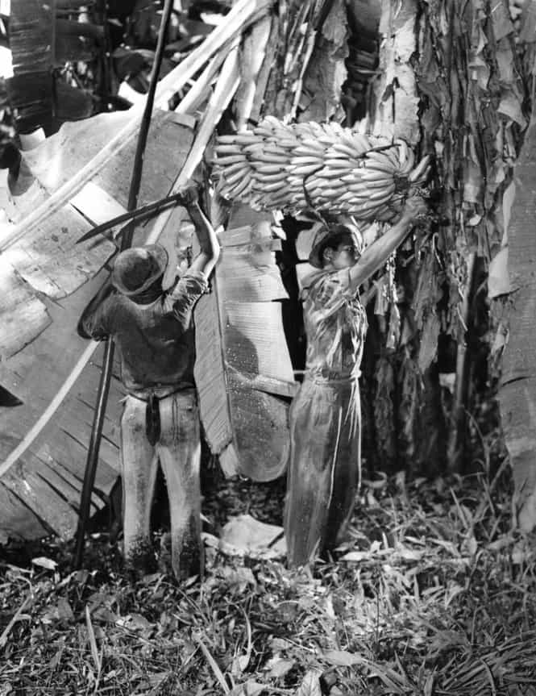

Daryush "Roosh" Valizadeh created ROK in October 2012. You can visit his blog at RooshV.com or follow him on Twitter and Facebook.


This is the intriguing tale of Sam Zemurray, a Russian immigrant who built one of the largest banana empires in the late 19th century, accumulating enough power to control the Central American republics where the bananas grew.
Zemurray had humble beginnings as a nobody in New Orleans milling around the decks. He sensed opportunity in rejected overly ripe bananas that wouldn’t last the long train ride to America’s cities.
He was pure hustle. Every morning, before first light, he was at the docks with a pocketful of bills. Foghorns blew, train wheels rattled, smoke drifted across the sky. He purchased every ripe and overripe and about-to-be-ripe he could lay his hands on. The importers were happy to get money for what, in other towns, was considered trash. He sorted these bananas, then loaded them onto the boxcars of the Illinois Central: the overripes went to markets in Mobile or towns nearby; the ripes went to stores fifty or a hundred miles up the line; the about-to-be-ripes might keep as far as Memphis or Birmingham.
[…]
He believed in the transcendent power of physical labor— that a man can free his soul only by exhausting his body. A life in an office, deskbound, was for the feeble and weak who cut themselves off from the actual.
When American banking interests started to encroach on his growing business in Honduras, he decided to organize a Honduran coup. He succeeded. His business continued to grow, spreading its tentacles all over Central America, until escalating competition with the massive United Fruit consort lead to violent exchanges on their neighboring banana plantations.
The American government got involved to prevent a Central American war, pressuring Zemurray to sell his company to United Fruit. He agreed, but became horrified that the Ivy League bean counters at United Fruit were killing his baby with their incompetent management style. Since he was a large United Fruit shareholder, he got proxy votes from other shareholders to organize a hostile takeover. He became the leader of the largest banana company in the world and reversed the decline caused by his predecessors.
With the help of the father of modern propaganda, Edward Bernays, Zumurray convinced the American government that the business-unfriendly leader of Guatemala was actually a communist since he wanted better wages and conditions for the country’s workers instead of simply letting corporations like United Fruit use the nation as its own wealth-generating machine. The CIA organized a coup that took the Guatemalan president out of power. The CIA- and Zumurray-approved successor continued to give favorable terms to United Fruit.
[Guatamalan leader] Arbenz aged ten years in the last five days. Retreating to the presidential palace, he spent these hours in a drunken stupor, wandering the halls, muttering about gringos. He was disheveled and could not sleep. Now and then, he went on the radio. “Our enemies are led by the arch-traitor Armas,” who is leading a “heterogeneous Fruit Company expeditionary force” against the country, he said, his words obscured by the static of CIA jamming. “Our crime is having enacted an agrarian reform which affected the interests of the United Fruit Company.”
The coup did not go unnoticed by the Western press. The US government threw Zumarry under the bus, claiming his company was a monopoly even though he gave them critical resources to successfully stage the coup. It was the beginning of the end for the now elderly banana man.

My only issue with this book is that there was too much e-moting and speculation from the author, who tried to read people’s minds from fleeting events. It was like reading Anderson Cooper in book form, with the writer going to great lengths to insert himself into the story. Other than that, it was a quite enjoyable story of intrigue, hustle, and politics that describes the rise of an ingenious businessman who made it big from a simple idea.
Read More: “The Fish That Ate The Whale” on Amazon